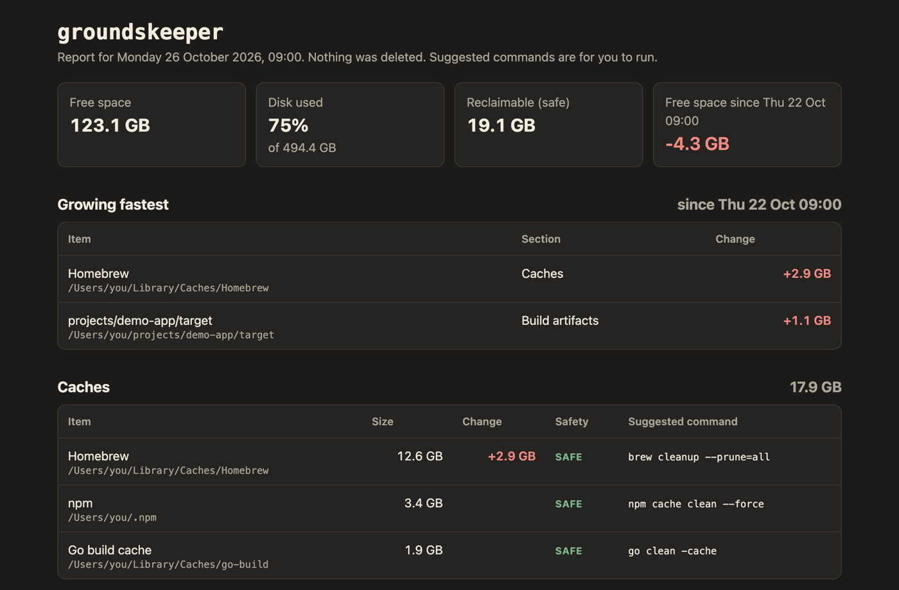
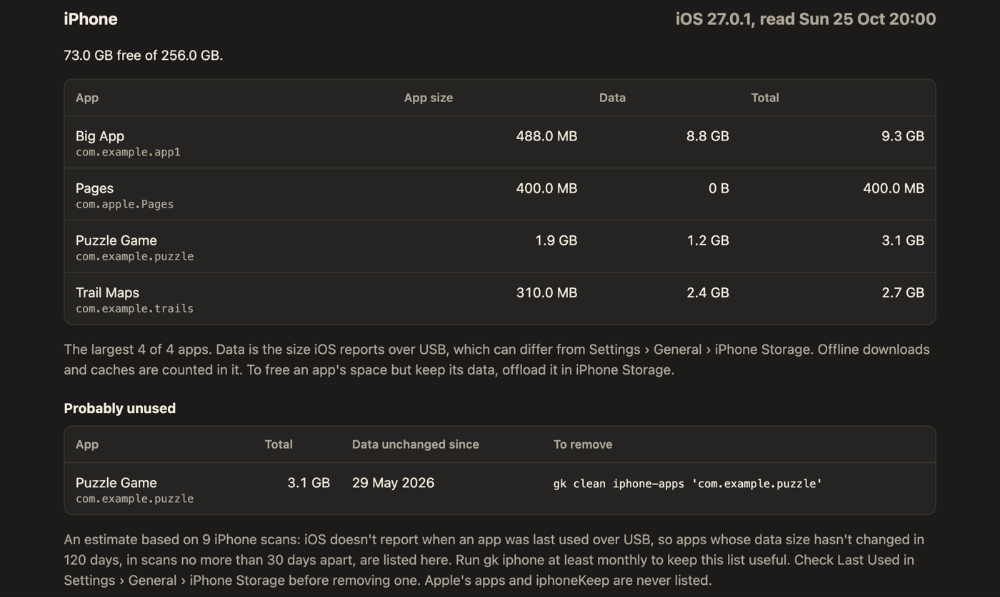
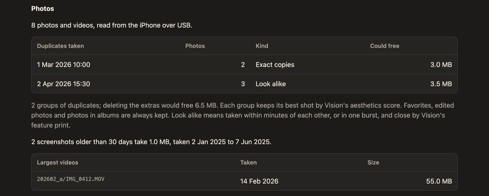

Groundskeeper scans your Mac, and an iPhone on USB, for space you can reclaim. Twice a week it writes a report. Nothing is deleted until you say so.
What it finds
Groundskeeper (gk) measures where your space went and tells you what's safe to clear, with the command to do it.
Homebrew, npm, Go, pip and the rest, each with the command that clears it.
Ollama, Hugging Face and LM Studio models you may have forgotten you pulled.
Stale target, node_modules and virtual environments in old projects.
Old SDKs, extra toolchain versions and container images.
Old downloads and browser caches. Never cookies, history or passwords.
Apps on the Mac, and on your iPhone, that you probably don't use any more.
The report
Monday and Thursday mornings, Rook scans and leaves an HTML report: free space, what's growing fastest, and every item with its size and a suggested command.

Your iPhone too
With an iPhone on USB, gk iphone adds its apps, shared files and duplicate photos to the report. gk review photos steps through groups of similar shots and marks the best one in each to keep.


Careful by design
Groundskeeper runs with Full Disk Access, so it treats everything it touches as private.
The report suggests commands. It never runs them.
Every clean command shows what it would do until you add --apply. Files go to the Trash.
No telemetry, no update checks. The only connection is USB to your own iPhone.
It adds up file sizes and never opens cookies, history, keychains or messages.
Ask an AI assistant
gk mcp serves three read-only MCP tools, scan, history and stats. An assistant can explain your disk but can't clean anything.
Use a local Ollama model to keep results on your Mac, or Claude Desktop if you're fine with paths going to Anthropic.
Install
make install puts gk in ~/bin and schedules the twice-weekly scan. gk doctor checks the rest.
$ git clone https://github.com/shaynemeyer/groundskeeper.git $ cd groundskeeper $ make install $ gk doctor $ gk --open # scan and open the report
Then read the user guide for Full Disk Access, cleaning up, the iPhone and privacy.